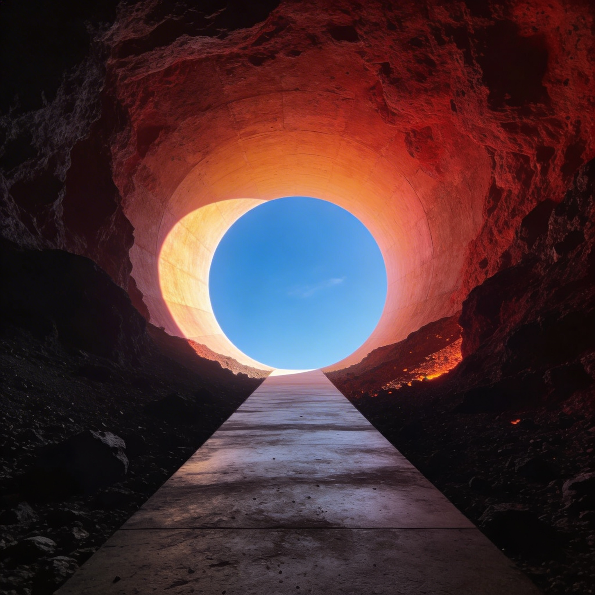

I
The Man Behind the Mountain
James Turrell is not a normal artist. Born in 1943 in Los Angeles, he grew up in a Quaker family where silence was sacred — Quaker meetings are built around sitting in stillness and waiting for the light. His grandmother told him: “Go inside and greet the light.” He took it literally.
He earned a pilot’s license at 16. During the Vietnam War, he registered as a conscientious objector — and flew Buddhist monks out of Chinese-controlled Tibet instead. He studied perceptual psychology at Pomona College (B.A., 1965) before getting his MFA in art from Claremont Graduate School in 1973.
The psychology degree matters. Turrell doesn’t make art about light. He makes art from light. He’s spent his career studying how the human eye and brain construct reality — how what we see is not what’s there, but what our perceptual system decides to show us. His medium isn’t paint or stone. It’s the raw material of vision itself.
In 1966, he moved into the old Mendota Hotel in Ocean Park, California, and began experimenting with projected light and controlled apertures — cutting holes in walls and ceilings to frame the sky, then carefully controlling the interior light levels so the sky appeared to be a flat, painted surface rather than an infinite void. People would reach out to touch it, convinced it was a canvas.
II
Finding the Crater
By the mid-1970s, Turrell had outgrown hotel rooms. He wanted something bigger. Something permanent. Something that would take the sky and hold it.
He began searching for the perfect natural formation — a place with pristine dark skies, high altitude, and a concave shape that could frame the celestial dome. He flew over the American Southwest in his small plane, surveying volcanic fields and canyons.
In the early 1970s, he spent the night in the bowl of an extinct cinder cone in northern Arizona’s Painted Desert, about 50 miles northeast of Flagstaff. The crater was roughly 400,000 years old, about 3 miles across. The surrounding desert was essentially untouched — no light pollution, no development, no civilization for miles. The sky above was one of the darkest remaining in the continental United States.
He had found it. In 1977, Turrell acquired the land. He has never left.
III
Carving Light
What Turrell has done to the crater over the past five decades is staggering in both ambition and patience.
He moved 1.3 million cubic yards of earth — reshaping the interior of the crater bowl, cutting tunnels through the volcanic rock, carving precise apertures that frame specific celestial events. The longest tunnel, the Alpha (East) Tunnel, stretches 854 feet (260 meters) into the crater.
The tunnels and chambers are not random. Each one is engineered to capture specific light at specific times. The Sun & Moon Chamber frames both the sun and moon at precise moments. The Crater’s Eye — the natural bowl of the crater itself — has been reshaped into an elliptical amphitheater of sky. Some spaces are designed to be most accurate in about 2,000 years, accounting for the slow drift of Earth’s axial precession.
When complete, the project will contain 24 viewing spaces and six tunnels. Each space is a controlled environment for experiencing and contemplating light — where the cycles of geologic and celestial time can be directly perceived.
IV
The Spaces
The completed spaces are individually remarkable. Together, they form a cathedral of light carved from an extinct volcano.
The Crater Bowl
The natural depression of the volcano, reshaped into an elliptical amphitheater open to the sky. Standing in it, you are inside the earth looking up. The surrounding rim frames the sky in a way that makes it feel close, almost touchable.
The Alpha (East) Tunnel
A 854-foot tunnel bored through the eastern rim. Walking through it is a journey from darkness into progressively brighter light, emerging at an opening that frames the eastern sky at a precise angle. The sky at the tunnel’s end appears as a flat, luminous plane rather than an infinite distance.
The Sun & Moon Chamber
Engineered so that at certain times of year, the sun or moon passes through a small aperture and projects a perfect disc of light onto the opposite wall. It functions like a camera obscura the size of a mountain.
The Crater’s Eye
At the bottom of the bowl, a shallow pool of water reflects the sky above, creating a disorienting doubling effect where you cannot tell where the earth ends and the sky begins.

The Alpha (East) Tunnel — 854 feet of journey from darkness into light.
My desire is to set up a situation to which I take you and let you see. It becomes your experience.
James Turrell
VI
Why It Matters
Roden Crater occupies a strange position in the art world. It is simultaneously:
- A work of land art on the scale of Robert Smithson’s Spiral Jetty or Michael Heizer’s City
- A functioning observatory for naked-eye astronomy
- A perceptual psychology experiment disguised as architecture
- A meditation on deep time — built to last centuries, optimized for millennia
- An act of stubbornness so extreme it borders on something spiritual
There is nothing else like it. Ancient peoples built observatories — Stonehenge, Chichén Itzá, Angkor Wat — but always as communal, religious structures. Turrell has built one as a personal artistic statement, funded by grants, donations, and Kanye West.
The Dia Art Foundation calls it “a controlled environment for the experiencing and contemplation of light.” The official site describes it as “more akin to the communally developed sites of ancient Incas, than to the conceptions of any individual one can think of in modern times.”
Only a tiny number of people have ever been inside. The crater is closed to the public. Fundraising continues. Construction continues. Turrell, now in his early 80s, continues.
The Paradox
Here is the paradox at the heart of Roden Crater: it is an artwork made from something that cannot be owned. Turrell doesn’t control the sky. He doesn’t control the rotation of the Earth, the precession of the equinoxes, or the path of the sun. He can only frame these things — build apertures and tunnels and chambers that direct your attention.
And yet, by doing this for fifty years with absolute conviction, he has created something that feels more permanent than the volcano itself. The crater was here for 400,000 years before Turrell arrived. It will be here long after. But the experience of the crater — the way light enters it, the way the sky is held inside it — that is entirely his creation.
A friend once joked that Roden Crater would be finished “when Turrell finishes it.” Given that parts of the design are calibrated for celestial events 2,000 years in the future, the joke may be closer to the truth than anyone realizes.